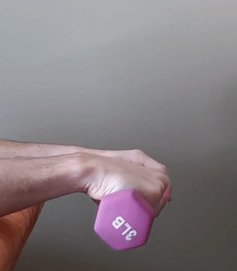

Computer endurance via self-care
Heavy computer use should be in balanced with equal amounts of self-care to maintain your body.
I spend large amounts of time using a computer. By day, I am a software engineer that works remotely. By night, I spend most of my time contributing to open source software. The current plan is to continue doing both for the rest of my life.
To help make that plan a reality, I invest in my body to counteract the grind of constantly being on a computer. There are many things like exercising that we should all do, and there are some things I do specifically because of my computer use.
Here is the history of how I invested in self-care as a heavy computer user. Maybe some of the things that have helped me can also help you.
This category contains approaches to self-care that only have a one-time financial cost and no additional time commitment.
When I started graduate school in 2009, I bought the Herman Miller Embody for my desk chair. At the time, I knew that the Herman Miller Aeron was popular with web startups in the era of the dot-com bubble. I also thought that the Embody was Herman Miller's successor to the Aeron, but I am unsure now why I thought that.
The Embody came with a 12-year warranty that is about to expire for me. This warranty covers everything at no cost. I have used it three times to replace the armrest pads (when some small pieces broke off), the entire armrests (because a mechanical part kept failing), and the upholstery (because of stains). Warranties from Herman Miller are serviced by local independent companies. A technician came to my home to replace those parts.
If I were to buy an office chair today, I would start with the review and recommendations given by the Wirecutter for The Best Office Chair. The Aeron is currently their runner-up. The Embody was also reviewed and deemed comfortable but was not recommended because of better and less expensive alternatives.
When I became a professional software engineer in 2015, I bought the Logitech G710+. Here are my favorite features.
Backlit keys are an essential feature to me. I never want to strain my eyes to see a key. I always have the brightness at the minimum level, and I can easily see every key in any lighting condition.
Programmable keys are quite useful. There are six of them on the left side of this keyboard. I have them set to keyboard shortcuts in Visual Studio that I use often and are either difficult or impossible to do with one hand.
Ctrl+R, Ctrl+G Remove and Sort Usings/NamespacesCtrl+K, Ctrl+D Format DocumentCtrl+K, Ctrl+C Comment SelectionCtrl+K, Ctrl+C Uncomment SelectionCtrl+R, Ctrl+V Run All Tests in ViewCtrl+Shift+B Build SolutionMechanical keys come in a few different "colors". Mine are brown. I picked this color because it had the minimal actuation force among the colors that are both tactile and non-clicky.
Analog volume control was a nice surprise. It was not something that was on my radar. However, this is significantly better than having to incrementally increase or decrease volume by set amounts like my laptop does via Fn+Right or Fn+Left.
A common feature of ergonomic keyboards is to rotate the keys on the left clockwise and the keys on the right counterclockwise. I have never seriously considered getting one of these keyboards but maybe I should.
When I became a professional software engineer in 2015, I also bought the Logitech G700s. Briefly, the features I wanted were a right-handed design, a back button, a tilt wheel (to scroll horizontally), and a wired connection. I prefer wired so that I do not have to think about the power level and charging. This mouse can also be wireless, and I have found that feature useful when I am not at my desk. I was pleasantly surprised by the dual-mode scroll wheel. Like most mice, the scroll wheel only rotates by some minimum fixed increment. However, after clicking the button next to the scroll wheel, the scroll wheel rotates continuously and maintains its momentum for a long time. I use this feature often to quickly scroll to the bottom of a page (especially when the page uses infinite scrolling).
A couple years later, I started having pain in my right wrist. The condition is generally known as repetitive strain injury. The pain grew overtime until late 2018 when it became unbearable. The worst was trying to get up off the ground. Normally I would lean to my right and push off the ground using my right arm with my palm flat on the ground. However, this caused an intense shooting pain in my wrist. As a workaround, I either used my left arm or put my right hand into a fist.
To reduce the repetitive strain on my right wrist, I decided to begin using the mouse with my left hand. It was frustrating at first because I was not as good with my left hand. However, I was determined to stick with it for the sake of my right wrist. I have now been using the mouse with my left hand for a year and half.
Since the mouse I had was a right-handed design, I needed a different one. I bought the Logitech G903 in March 2019. It is basically the same as the G700s except that it has an ambidextrous design. The mouse is symmetric other than a pair of buttons that are intended to be put on the same as your thumb.
With both mice, I have experienced the same hardware failure. After a year or so, debouncing begins to fail. Sometimes a single click is registered as a double click or dragging stops and starts. The result is horrible. Think about closing a maximized window by clicking the X button in the top-right corner of the screen. The double click first closes the focused window and then the window underneath it. I cannot imagine that this happens to every Logitech mouse user. I wonder if it is because I push down on the mouse button somewhat close to the hinge. I am still happy with Logitech though because the warranty allowed me to replace both mice for free.
Before switching to using the mouse with my left hand, I seriously considered buying the Logitech MX Vertical. Ironically though, it has a right-handed design, so I would have to switch back to using my right hand. I will probably switch back one day since otherwise I could develop RSI in my left wrist. When I do, I might buy this mouse.
Gua sha is a technique in which a tool is pressed into the skin and rubbed back and forth. A primary goal is to increase blood flow to an area by inflicting some minor damage to capillary blood vessels. I think an additional goal might be to help break up knots in muscles.
I bought this gua sha stone made of jade and occasionally use it on my right hand and forearm. I go easy on myself and never cause bruising. I am unsure if it helps, but it feels good.
I put off getting an adjustable-height desk for a long time. I procrastinated because I was overwhelmed by choice, high costs, and my lack of knowledge. One thing I was told to avoid is an adjustable-height desk that moves too much from side to side when being used in its standing position.
Eventually a friend suggested that I consider what the Wirecutter recommends in its review for The Best Standing Desks. This was excellent advice. I finally felt confident committing to a company, which was UPLIFT Desk.
Their adjustable-height desks are highly customizable. When I bought the UPLIFT V2 Standing Desk in October 2019, the base price was about $600, and I spent an additional $600 for upgrades. I also received $90 off by ordering over the phone. I think this happened because I only called the first time to ask questions, and they wanted to improve their odds of making a sale.
Here is how I customized by desk.
I thought the cost for most of my upgrades was low.
I got that keypad partly because it can be locked (by holding down a certain key for several seconds). Otherwise, my four-year-old would be constantly pushing these buttons and changing the height. I also enjoy the convenience of using the memory feature to store my preferred heights.
I got the stool as a fun thing for my kids.
I got the monitor and laptop mounts because I think having the screens at the correct heights are among the most important considerations. Unfortunately, I have yet to use either of these because I lack any monitor to mount, and I am afraid that a new monitor might not work so with my six-year-old laptop. Buying and mounting monitors is at the top of my list for improving the ergonomics of my desk.
I got their most advanced keyboard tray because the primary reason for getting the entire desk was to alleviate the pain in my wrist.
Standing mat
I bought a standing mat along with the adjustable-height desk. Once again, I took the recommendation from Wirecutter in their article The Best Standing Desk Mats, which is still this mat by Ergodriven.
My sitting posture is rather bad. I tend to lean forward, bend over, and roll my shoulders forward. At the same time, I never seriously considered getting an alternative chair that replaces explicit back support with a forced improvement to posture even though I have always found the concept intriguing.
Then CGP Grey recommended the Fully Balans Kneeling Chair on this episode of the Cortex podcast. I finally bought it in September 2020 and love it. Thankfully I already had an adjustable-height desk because I need an intermediate height when using this chair.
This category contains approaches to self-care that either have a recurring financial cost or additional time commitments.
I have always enjoyed getting a massage. I used to get one about every three years for some special occasion. I always got a relaxation or Swedish massage. When asked if there were any areas that should be given special attention, I would say my back (for lack of a better answer) since I figured it might be worse off from sitting so much.
When wrist pain was at its worst in late 2018, I went to play basketball in the hopes that this exercise would make it feel better. The opposite happened. Unfortunately, the ball hit the middle finger on my right hand and gave me the worst jammed finger of my life.
The next day I called Essentially Massage and booked the earliest available appointment. I had been considering them for a while. Their massage therapists use therapeutic massage to treat both traumatic injuries (like a jammed finger) and chronic injuries (like my wrist pain from many years of heavy computer use).
I received great care from Essentially Massage. We started out with an hour-long session every three weeks. When I started to feel better, we reduced the frequency to every four weeks. I know their massages where helping because the pain returned after I took a couple months off. Looking back, it is now hard for me to believe that I used to think that I could handle moderate injuries or chronic pain by myself instead of having experts like these put my body back into the proper working order. I highly recommend that everyone give therapeutic massage a try.
During the beginning of the COVID-19 pandemic, many businesses were forced to close. Unfortunately, this included Essentially Massage. While looking for an alternative treatment, a friend recommended therapeutic ultrasound, which can be administered by a chiropractor. My wife was already going to Club West Chiropractic, so I went there.
I had weekly therapeutic ultrasound appointments for about six weeks. I decided not to use my health insurance since they only charge $20 per session (and a one-time diagnostic charge of $20) when health insurance is not involved.
At the first session, the chiropractor treated my arm just below my elbow where the tendons from my fingers connect. My wrist hurt much worse than normal for the rest of the day. The second treatment was on my arm close to my wrist, but I am not sure it helped. After that, we decided to only treat near my elbow.
After six weeks, my wrist felt much better, so we stopped treatments. This allowed me to determine if the exercise I was assigned can keep my wrist functioning well all by itself.
The chiropractor assigned me a daily wrist exercise. Here is a video of the exercise followed by an explanation from the chiropractor, Dr. Ally Bergh.

When you are typing, you are in a constant wrist extension. You are using a concentric muscle contraction to lift your fingers and wrist into extension. This constant type of contraction of such little muscles starts to strain the muscle and inflame the tendons. Tendinitis is the result. The type of exercise to counter this is an eccentric muscle contraction. You help yourself with your opposite hand during the concentric contraction and then slowly fight the resistance of a weight. This helps strengthen the muscle in a more mild re-education type fashion as opposed to a building muscle fashion.
The goal is to go slow and resist the pull of gravity on the weight (which is one of these). I have an alarm on my phone that goes off each evening to remind me to do this exercise. I actually do the exercise about five days each week. I think it is working. If I ever miss two days in a row, then I can feel the tightness and pain in my wrist increase.
I have spent lots of time and money on the maintenance of my body and especially my right wrist. I am optimistic that all my tools and new wrist exercise are an effective long-term strategy.
Nonetheless, I will continue to improve my self-care. My highest priority is buying and mounting monitors, but this is partially blocked by my concerns about having an older laptop.
I hope knowing everything that I have tried gives you ideas and motivation to improve your self-care.
The tags feature of Coding Blog Plugin is still being developed. Eventually the tags will link somewhere.